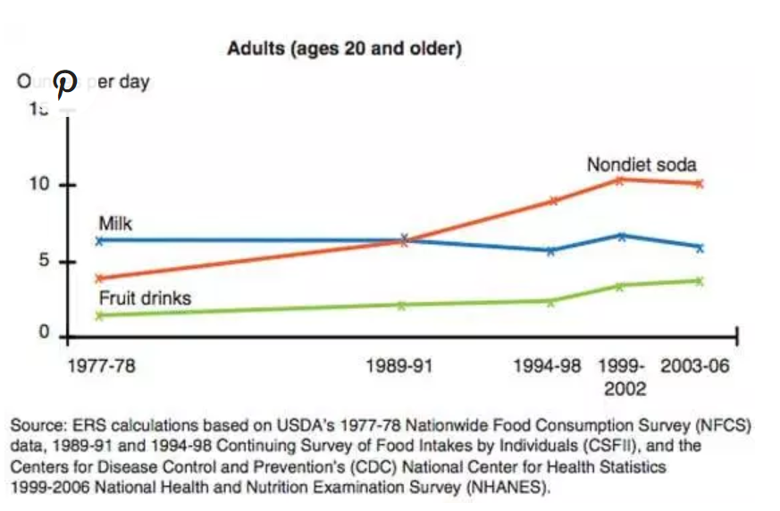
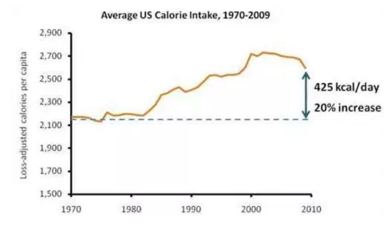
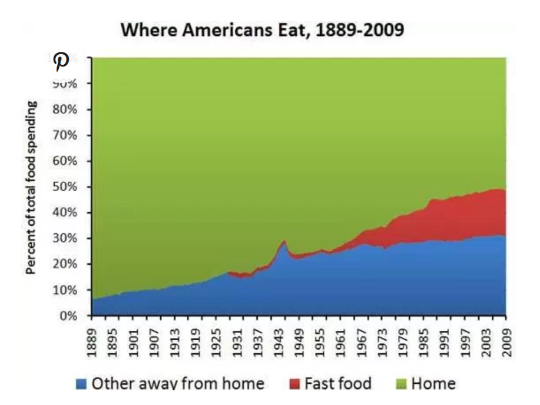

Modern Diet Trends
How far do we aware on the modern diet trends that have evolved in our daily life? The enabling advanced technology has forced us to live in time with everything that can ease our daily activities. This trends has also being made available in our daily dietary needs.Some are good and some aren't.
From our Modern World Nowadays
Graphs That Show Everything That is Wrong With The Modern Diet
Of course, there are many things that can contribute to these health problems, but changes in the diet are the most important factor.
Everywhere modern processed foods go, chronic diseases like obesity, type 2 diabetes and heart disease soon follow. The studies are clear on this...when people abandon their traditional foods in favor of modern processed foods high in sugar, refined flour and vegetable oils, they get sick. Here are graphs that show everything that is wrong with the modern diet.
1. Consumption of Soda and Fruit Juice Has Increased Dramatically
Of all the sugar sources in the diet, sugar-sweetened beverages are the worst.
Fruit juice is actually no better... it contains a similar amount of sugar as most soft drinks.
Getting sugar in liquid form is particularly harmful. The studies show that the brain doesn't "register" liquid sugar calories the in the same way as calories from solid foods, which dramatically increases total calorie intake.
2. Calorie Intake Has Gone up by Around 400 Calories Per Day
Although sources vary on the exact figures, it is clear that calorie intake has increased dramatically in the past few decades.
There are many complicated reasons for this, including increased processed food and sugar consumption, increased food availability, more aggressive marketing towards children, etc.
3. People Are Eating More Processed Foods Than Ever Before
This graph shows how consumption of fast foods has increased in the past few decades.
Keep in mind that even though it looks like people are still eating most of their foods "at home" - this does not take into account the fact that most people are also eating processed foods at home.
Harmful Effects of Diet Pills and Supplements
For individuals with a strong desire to lose or maintain their weight, diet supplements may seem like a magical solution.
The manufacturers of these products make extravagant promises about the properties of their drugs, but most of these claims are not backed up by clinical research.
In fact, the drugs that promise to help you shed pounds or burn fat may hold hidden dangers to your health. In spite of the risks of using diet supplements, the demand for these products continues to rise, especially among individuals with eating disorders.
Up to 50% of those who meet the criteria for an eating disorder use over-the-counter diet pills, herbal supplements, or prescription drugs to lose weight, according to Eating Behaviors. Unless you’re using weight-loss drugs for legitimate medical reasons under a doctor’s supervision, you may be putting yourself in harm’s way by using these products.
HOW DO WEIGHT LOSS SUPPLEMENTS WORK?
If you’re searching for dietary supplements that will help you lose weight, you’ll have no shortage of choices. The companies that distribute these products claim that the ingredients in their supplements can help you achieve results like these:
- Make you feel full before you’ve had too much to eat (guar gum, psyllium)
- Speed up your metabolism (caffeine, guarana, synephrine, B-complex vitamins)
- Slow down your body’s fat production (green tea, hydrocitric acid, flax seed)
- Keep your body from absorbing the fat in the foods you eat (chondritin)
Diet supplements are available in just about any form that you can take by mouth – from pills and capsules to powders, liquids, and teas. Some products are taken with a meal, while others are taken instead of a meal.
HOW DO YOU KNOW WHAT YOU’RE TAKING?
One of the biggest risks of taking over-the-counter diet supplements is that you can’t always be certain about the ingredients that a product contains.Because the FDA does not test all weight loss products for safety, there’s no guarantee that each ingredient in every supplement is safe. The FDA maintains a list of tainted weight-loss products so consumers can be aware of ones they should stay away from. Because the manufacturers did not list these ingredients on their product labels, consumers would have no way of knowing that they were ingesting products like these:
- Sibutramine: a weight-loss drug withdrawn because of its association with an increased risk of high blood pressure, heart attack and stroke
- Rimonabant: an appetite suppressant not approved for use in the US
- Phenytoin: an anti-seizure drug
- Phenolphthalein: an experimental drug that may cause cancer
The FDA issued a warning to consumers not to purchase supplements in its list of tainted products; however, this agency can’t test every new product on the market. The best way to ensure your safety is to consult a healthcare professional before you take any weight loss supplement.
HOW ARE DIET PILLS ABUSED?
Someone with an eating disorder may not be concerned about the dangers of dietary supplements. They may be so preoccupied with losing weight that they don’t care about the risks to their health. In an obsessive drive to lose weight, an individual with anorexia or bulimia is likely to abuse diet supplements in the following ways:
- Taking more than the recommended dose of a dietary supplement
- Taking prescription weight loss medication without a doctor’s supervision
- Combining multiple weight loss stimulants
- Taking diet products that aren’t recommended for individuals who are at a normal weight or underweight
Taking an excessive dose of a diet supplement or combining supplements can be extremely hazardous. An overdose of stimulant products could raise your blood pressure to dangerously high levels, putting you at risk of a heart attack or stroke. Taking fat-blocking supplements along with laxatives or diuretics could cause diarrhea, fluid loss, and an electrolyte imbalance. Abusing products that hold a risk for liver or kidney damage only increases the possibility of life-threatening organ failure.

About Us
- Our Background
- Services
MyDiet
- Food Pyramid Information
- Tips Diet
- Tips Living Style
Online tools
- BMI Calculator
- Applications Suggestions
- Websites Suggestions
Popular Topics
- Dietary Planning
- Super Food
- Do's & Dont's